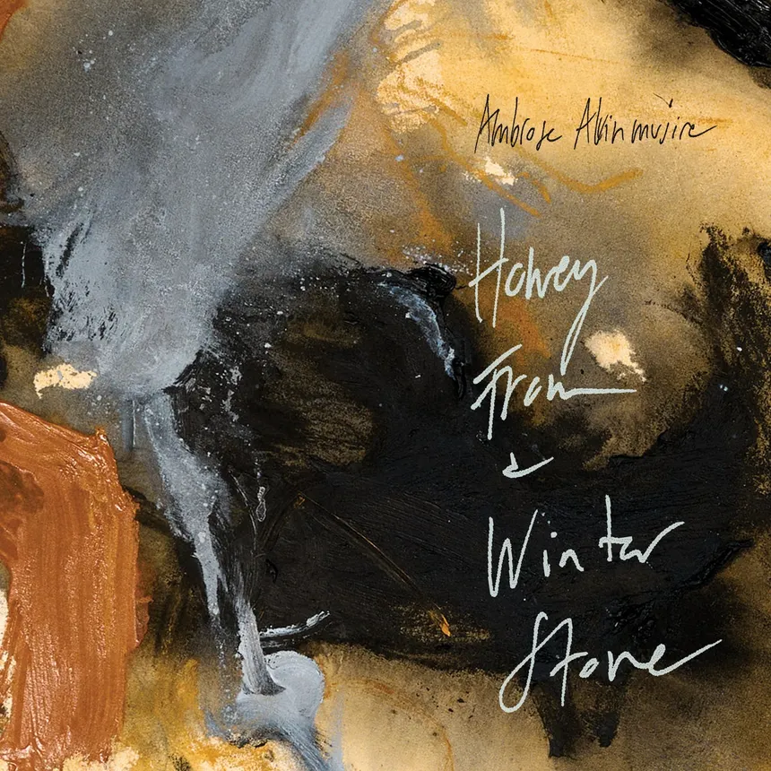

Découverte : Ambrose Akinmusire
J’ai découvert Ambrose Akinmusire en visionnant sur Youtube une vidéo de Flea (le bassiste des RHCP, ai-je besoin de le préciser) dans laquelle il parle de quelques albums qui l’ont récemment inspirés. C’est toujours intéressant de coir à quel point cet artiste disons “main stream” a des goûts très éclectiques.
Le mélange des genres est intéressant : jazz (tendance free), rap (dans le style des Last Poets), quatuor à cordes, et bien sûr au centre sa trompette qui ne cherche pas à briller mais à raconter. Sur cet album Honey from a Winter’s Stone sorti en 2025, Akinmusire pousse cette logique au bout — c’est dense, parfois exigeant, mais ça tient debout. A écouter donc.
